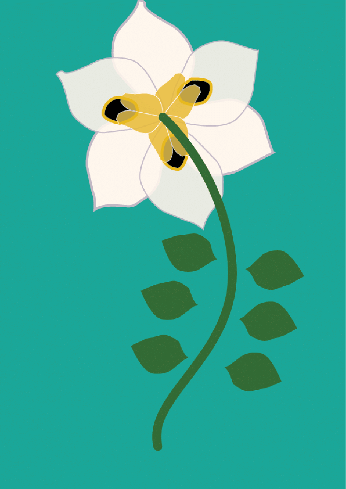
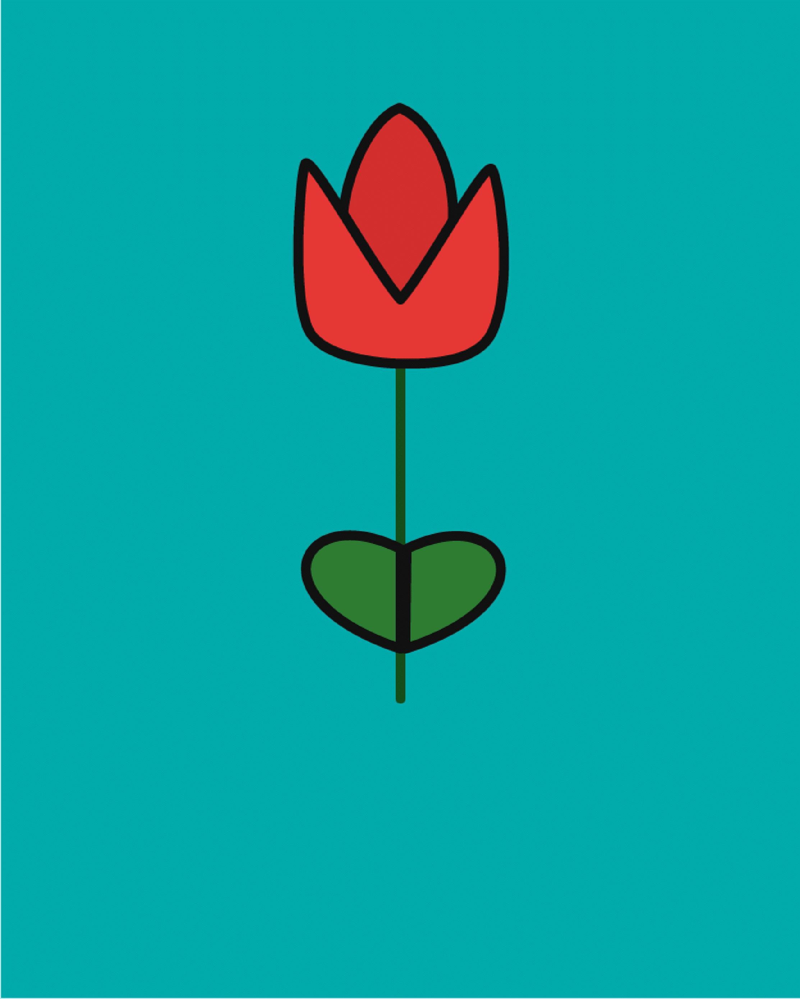
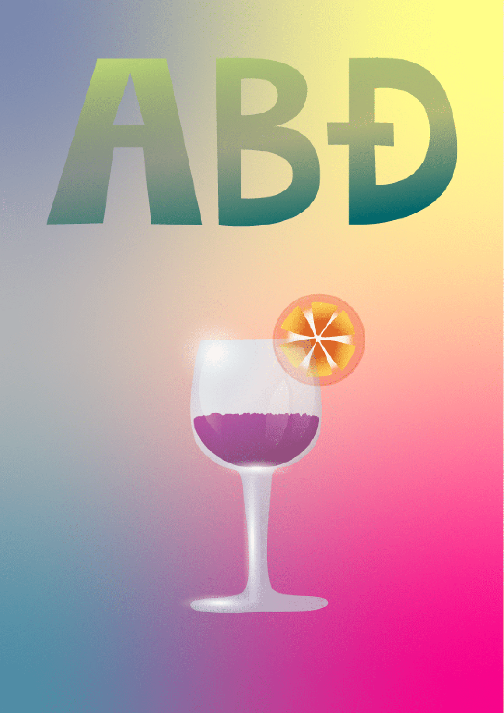
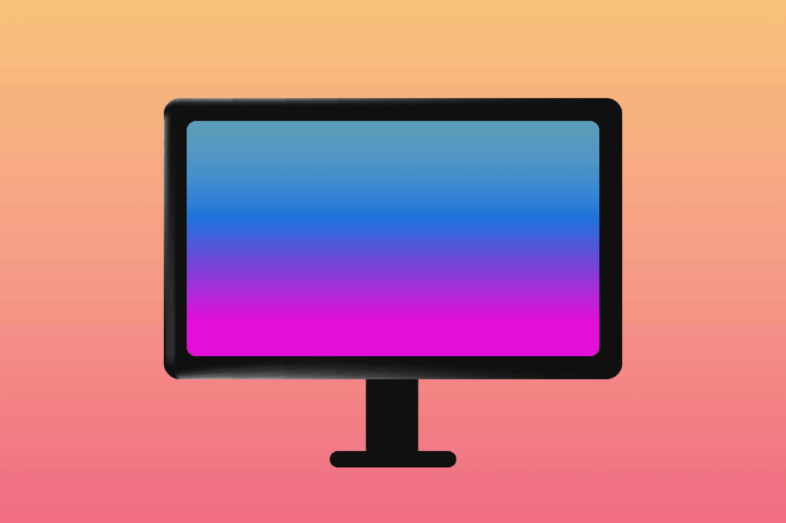
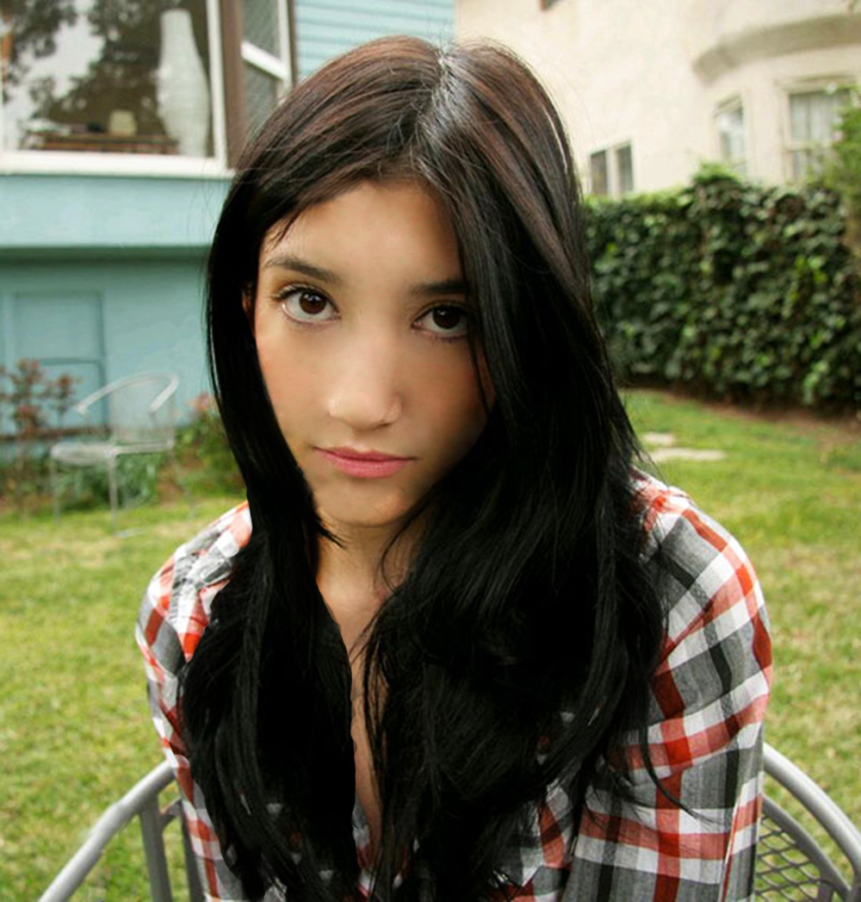
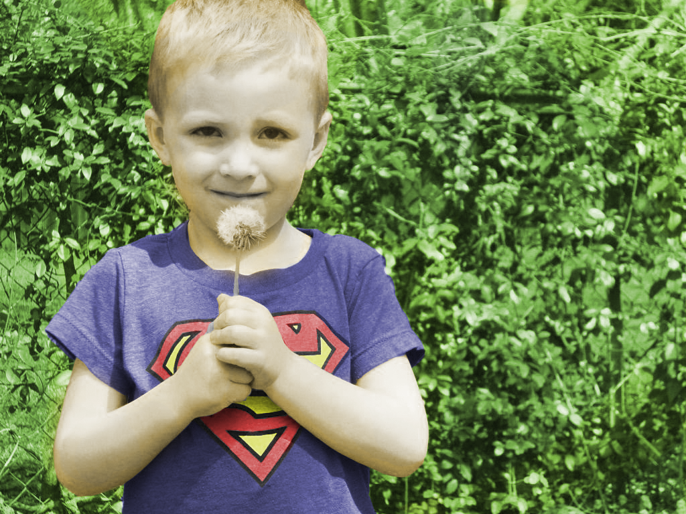
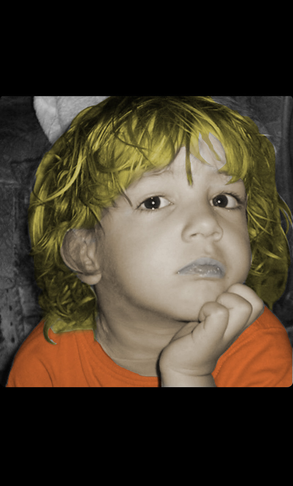
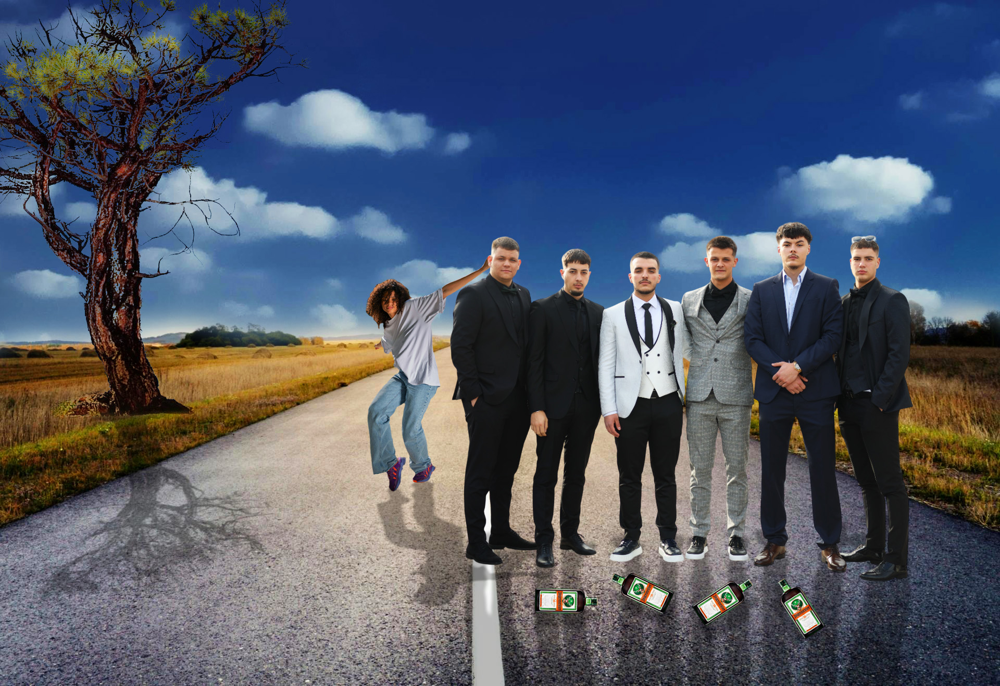
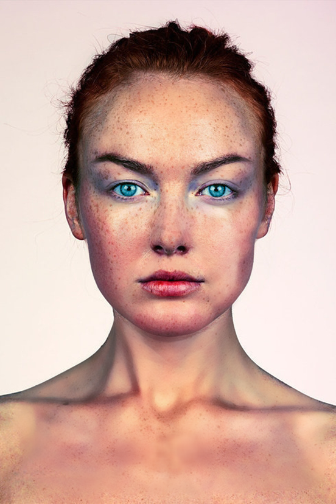
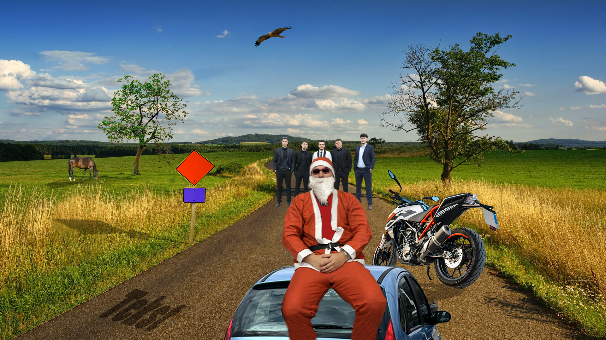

Projektni zadatak 1 – Vektorska grafika
Složeni objekti, gradijenti, transparencija.




-1.png)
Projektni zadatak 2 – Pixel grafika
Korekcija boja i retuširanje.






Vježba video 1 – Gif
Video obrada - Kinemagraf.